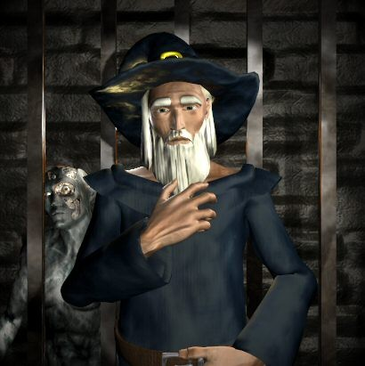

Welcome to the first "postbag from the hedge", bringing you insight from some of RuneScape's most talked about monsters and residents. In this issue we take a look into the lives of the great escaping chickens, crunchy the "always willing to help" skeleton, a lesser demon called Carrot and even the kbd lurks here too. Let's see what they have to say.
It seems to me that every time I come past you, you are always out of your enclosure. The gate is closed, but you are always on the outside. Anyway, since you're on the outside, why don't you just leave? Seek your fortune elsewhere? You've already miraculously taken the first step, which is getting out. So why don't you leave and find a place where you won't be killed for your feathers, meat, and bones?
Signed,
Jedirule312
Alas, this task was already undertaken, but whether the brave chicken was successful or not we do not know! For you see, old chicken legends speak of a strong chicken. One, who was tormented, isolated, locked in his pen by our human captors, every day plotting revenge. He trained himself up using old logs for training dummies and eventually climbed the gate to freedom. No one knows the fate of this chicken. Perhaps he was slaughtered for feathers, meat and bones as most of us eventually are. Although, I often hear some adventurers speaking of a chicken "strong evil chicken" terrorising warriors all over RuneScape...
My friends and I have recently been visiting you and your brothers (head #1 & head #3) in your humble abode. First I must apologize for taking part in your death several times over. Honestly, it was peer pressure. Ah, but I digress...
What I would like to ask you is this:
Do you and your brothers ever get mistaken for the legendary Three Stooges: Moe, Larry & Curly? If so, which of the three do you get confused with the most? I personally think it would be Moe.
Your Friend,
Ladyluck
PS. Contrary to popular belief, I'm not that lucky.
Dear Morsel,
We don't know what these "Stooges" are, do they taste good? We shall have to sample them some day, we miss so many delicacies trapped here in our cave. We once had gnome you know, hardly filling but they have a unique texture which is really something to experience. Ah those were the days when we could still slip out of here and roam free. We think it was all those funny little dwarves which did it though, they really can be very fattening, and now we're stuck in here.
We beg your pardon, we've wandered off topic. You mention our brothers? The three of us are more than brothers, we are like three sides of a coin. No morsel such as yourself could understand the bond we share. Ah, we do feel pity for our poor cousins with only the one mind, they must feel such loneliness.
Till next we eat,
The King Black Dragon
Do you like being a skeleton? is it fun to just stand there and hold a sign that says "high detail" how do you do it, I couldn't stand there for ever and hold a sign. i think that it is so kind what you do for the entire world, without you we would have to go looking on the floor for the high detail version of the game, i think that you are amazing in every way and even though most people don't use your button to play the game I do and with out you i would have to play a less detailed version of the game without sound (and i do like the sound very much) so once again thank you oh kind skeleton that holds the high detail sign,
thank you,
spiderobert
P.S. what is your real name and who is the person standing next to you?
My name is Crunchy I'll have you know! Do I like being a skeleton you ask? I was once an adventurer like you, slaying dragons, cutting trees, and fishing... until I was challenged to a duel by a POWERFUL mage, creator of worlds! I was too proud to pass up the challenge and was beaten. He plucked me from the world and made me stand here with this sign. I didn’t want to be the gate keeper for RuneScape you know. They don’t even feed me, my room mate hasn’t had a shower in 3 years and my arms hurt... help!
Sincerely yours,
the mysterious wanderer,
Devil king 3
Bow to the power of my magical zombies! The other Magic Guild wizards think I am crazy for summoning nothing but zombies over and over again. They do not understand the power which is contained. ZOMBIES! I cannot let you know the secret from which I summon my zombies, with no flint or fire, portal or doorway. Oh no, Not yet, for it is far too dangerous... not yet. Although, I do apologise about the noise of my... walking bones. My pretty magical zombies. If you wish to file a complaint, I suggest you try take it up with the zombies inside the cage...

UGLY!?! You’re not exactly Queen Ellamaria yourself. How dare you! I look good for a witch. Better than that Hetty in Rimmington anyway. My cheese is no ordinary cheese. Its Aggie's Self-Replenishable Cheese spell version 12. *Cackle* Muhahaha. It was one of the first spells I learnt. The tomato is another spell experiment that went slightly wrong... I was actually trying to summon a lesser demon. Careful with those tomatoes though as they do sometimes bite. They can protect me from that nuisance, Evil Bob. He is always sneaking up behind me. I should turn him into a rat, that’ll teach him. Hmmm *cackle* Muhahaha
I am writing you today with a very important question...
As I was swept downstream by the waterfall I dragged myself up on land and noticed you looking right at me, it was then when I knew you could answer my question but I was so cold all I could to is mutter words that you did not understand so now that I am warm by a fire in Edgeville I am mailing you my question....
As I wonder the world of Runescape the rivers stay still..... heres my questions
1.Why does the rivers not flow? is it frozen by some "EVIL"?
2.How does trout live in water that dont flow?
Well the its cooling down and the banks are closeing soon so i better mail then and head home to varrock before the "Tree Goblins" wake up...
Take Care,
Wiccaspeller. lvl:102
Ahh Wiccaspeller, I remember pulling you from the stream from where I was fishing and thinking "These trout look almost human. This be a strange catch for a fisherman, aye". As a born and bred fisherman I normally eat what I catch so I apologize for thinking about eating you with roast potatoes and freshly grown cabbage... mmmmmmm. Rivers frozen by evil you say? HA! Well then, by that theory that would make the trouts evil too? And the thought of an evil trout is far too amusing to be actual reality. What would it do? Drip on you? Aye, very evil indeed. Besides, there are rivers that flow. Take a look at the waterfall next time you are near.
I know this may come as a shock to you, but did you know that all the Other dragons are out and about and roaming free, while they keep you Imprisoned beneath the Hero's Guild as sport for the many Rangers in The world to take cheap shots at all day? I say it is not fair that they have limited you ability to defend yourself, and that they have stripped away your dragon pride in such a fashion. Surely, if they allowed you to fight back with your breath weapon, rangers would reconsider shaming you all day long by staying out of reach with their bows and arrows.
Even Elvarg, while still imprisoned like you, is still given the ability to fight back against attackers. I say you should muster your energies of the dragonkin and break free of your chains ! Make the world of RuneScape fear you once more, as they should...as a Dragon --- not some fish in a bucket.
Oh, and isn't it pointless to drop food for your killers when they are in no need of it, since they only range you anyway ????
Yours Truly
Taliesyn
Help! I am so glad someone has finally noticed that I am stuck in here and all my dragon chums are out roaming RuneScape's lands. I’ve given up trying to escape now. I’ve been in here so long and that pesky Achietties installed a door I can’t fit through! But wait! Perhaps you are right. After all I would very much like to seek revenge on all rangers who find it amusing to hide behind bars when fighting me. Cowards! *GROWL*
to my dearest carrot why do you never speak to me? we have so much fun, i swing my rune two hander at you and you try to rend my flesh from my skelaton, and everytime you die you leave your ashes so that i may keep another small peice of you, and you always give me a small gift of some coins or a steel full helm, that i treasure with everything that i am, yet when i speak to you you never respond, you put down my love poetry with your silence, and you never even use your better attacks on me, is it because you think im weak...you use your fire breath on council members but not on me why i ask why? do you not love me? i know you do you must, i have gone through so much effort getting you swordfish and you turn them down and make me eat them in our little games. if you just accepted them they would be so much more fun. please reply back to me oh beautiful carrot
undead preis
I have to say, I'm rather suprised undead preis. You come and kill me repetitively and steal the remains of my corpse and belongings, all the while hoping in twist of fate that I, your beautiful Carrot the Lesser Demon (yes Demon!), Minion of Zamorak would appreciate poetry and gifts?! I do believe you have been grossly misinformed about demons. Although, I look forward to your next visit.
-Carrot
I always wondered a few things. First, why do you go around giving out those mystery boxes? You seem to be in a hurry when you do, almost as though you're afraid of the boxes, or dislike the fact that they mutiply so much.
I realize that the reason you have so many to Give away is because the box multiplies so quickly, but where did you get the first box from in the first place?
I notice that sometimes you simply give out the gold, or small items that can be gotten from the mystery box instead, do you do that because you've already opened the mystery box?
I also noticed that you seem to have a lot of connections with the mime and several other random event hosts, how do you stay connected to them, and why?
And my last question... How old are you, Mystery man?
I am cursed to walk these lands with a box that duplicates in my bag. I need to get rid of these things as fast as I can. I found these boxes on my travels in the far Eastern lands, where the locals are known for their vast knowledge of trinkets and toys. I picked it up and couldn’t put it down, at that point I found the villages are also excellent pranksters. After finding that the boxes were particularly troublesome I went to seek help from friends such as The Mime. Unfortunately the two of us couldn’t open them all, so I pass them off to unexpecting adventurers such as yourself.
| Write your letters to |  |

|
More articles in Postbag from the Hedge
|
|